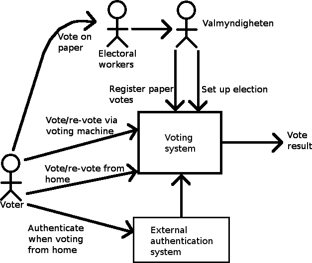

Requirements Document ver. 2
Generated by reqT.org Tue Nov 20 17:16:25 CET 2012
Context
System context
Product Electronic Voting System:

| Attributes | Values |
|---|
| Specification: | An electronic voting system which will complement the manual system which is used today. The long-term goal is to fully replace the current system during the course of a twelve year period. |
| Image: | ContextDiagram.png |
Product Electronic voting system:
| Relations | Destinations |
|---|
| helps | Goal Reduce manual labour, Goal Facilitate voting for people who have difficulties getting to a voting place |
Stakeholders
The stakeholders are prioritized on a scale from 1 to 3, where 1 is lowest priority and 3 is highest.
Stakeholder Cognitive impairment:
| Attributes | Values |
|---|
| Specification: | This group includes people who may have difficulties operating any voting system. (e.g. Dementia, Alzheimer's disease, etc.) |
| Priority: | 2 |
| Comment: | Goals: As many cognitively impaired as possible should be able to vote. Risks/costs: User interface too complicated to understand. |
Stakeholder Disabled / hospitalized:
| Attributes | Values |
|---|
| Specification: | This group includes people who may be incapable of moving to a voting place. |
| Priority: | 2 |
| Comment: | Goals: Be able to vote from where they are. |
Stakeholder Dyslectic / Illiterate:
| Attributes | Values |
|---|
| Specification: | People who have have difficulties understanding written text. |
| Priority: | 2 |
| Comment: | Goals: Easier/as easy to vote as with the current system. |
Stakeholder Experts:
| Attributes | Values |
|---|
| Specification: | Thore Husfeldt is a professor at the Computer Science department at Lund University, Faculty of Engineering and will provide the project with special knowledge on electronic voting systems. He is mainly interested in the system because he thinks that it is interesting from a scientific point of view. |
| Priority: | 3 |
| Comment: | Goals: Good technical solutions. Minimal security risks.
Risks/costs: Conflicts of interest among different stakeholders. |
Stakeholder Idlers:
| Attributes | Values |
|---|
| Specification: | There is a general interest in a democratic society to raise the election turnout. To do this, the system has to activate idlers. |
| Priority: | 3 |
| Comment: | Goals: Less effort required to place a vote. |
Stakeholder Non-swedish speaking voters:
| Attributes | Values |
|---|
| Specification: | People who don't speak Swedish but are eligible to vote. |
| Priority: | 2 |
| Comment: | Goals: Same opportunity to vote regardless of native language. |
Stakeholder Seniors:
| Attributes | Values |
|---|
| Specification: | Older people who have retired. (Somewhat vague. Some seniors still work. What does older mean?) |
| Priority: | 2 |
| Comment: | Goals: Voting should be done as smoothly as before. Risks/costs: Turnout is decreased among voters who have a tradition of going to a voting place to vote. Voting gets too confusing. |
Stakeholder Sub-contractors / Hardware suppliers:
| Attributes | Values |
|---|
| Specification: | This group includes manufacturers of the hardware for the machines in voting places and any providers of external software (such as security functions etc.) to be used in the electronic voting system. |
| Priority: | 1 |
| Comment: | Goals: That we use their external software and hardware so that they can benefit from this project. |
Stakeholder Swedish Valmyndigheten:
| Attributes | Values |
|---|
| Specification: | A government authority responsible for the parliamentary elections in Sweden. |
| Priority: | 3 |
| Comment: | Goals: Reduced costs for the election process (manual labour, vote places, vote counting etc.) Higher election turnout. Higher turnout for certain groups that have difficulties with the current system. Be sure that democracy is maintained, which means no votes can be sold or stolen, a person cannot vote for another person and noone can be forced to vote against their will. Be sure that the result is accurate.
Risks/costs: Identity theft. Too complicated for the voters. Security risks. Development costs. |
Stakeholder Typical voters:
| Attributes | Values |
|---|
| Specification: | The rest of the voting population. |
| Priority: | 1 |
| Comment: | Goals: Save time. Be sure that my vote counts and is counted for the correct party / candidate. Be sure that no one else can vote for me. Be sure that the result is accurate. Risks/costs: Too complicated. Sense of insecurity. |
Stakeholder Visually impaired / Blind:
| Attributes | Values |
|---|
| Specification: | This group includes every voter with some kind of visual impairment which may hinder their ability to use a voting system. |
| Priority: | 2 |
| Comment: | Goals: Higher turnout among the visually impaired. |
Stakeholder Voters abroad:
| Attributes | Values |
|---|
| Specification: | Swedish citizens who are abroad during the voting period but are still eligible to vote. |
| Priority: | 2 |
| Comment: | Goals: Easier/as easy to vote from where they are. |
Goal requirements
R1. The system shall support the following goals:
Goal Facilitate voting for people who have difficulties getting to a voting place:
| Attributes | Values |
|---|
| Specification: | Make it easier for the disabled, very ill, etc. by permiting voting from where they are situated. |
Goal Reduce manual labour:
| Attributes | Values |
|---|
| Specification: | Reduce the number of public voting places and the number of votes to be handled manually. |
Tasks to be supported
R2. The system shall support the following tasks:
Task 1: Carry out voting via the web interface
| Attributes | Values |
|---|
| Rationale: | Let a person place a vote online. |
| Trigger: | A voter opens up the voting website during the voting period. |
| Critical: | Worst case: the entire voting population logs in and place their votes at the same time. |
Sub-tasks:
Task 1.1 Authenticate: The voter enters his/her personal code on the recieved voting card in the web interface and authenticates him-/herself using electronic identification (e.g. BankID)
Task 1.2 Choose party and candidate: The voter chooses the party and candidate that he/she wishes to vote for in the web interface.
Task 1.3 Confirm: The voter confirms that the chosen party and candidate is indeed the one he/she wants to vote for, using the web interface.
Task 1.4 Recieve confirmation: The voter recieves a personalized message confirming that the vote was counted for the correct party.
| Attributes | Values |
|---|
| Comment: | It should be very difficult to fake this confirmation message. |
Variants:
Task 1a Carry out voting via the web interface - the typical case: A person without any special needs uses the web interface to vote
| Attributes | Values |
|---|
| Example: | The voter chooses to vote through the web interface. On the voting card there is a web adress to the voting website. The voter opens up this site in a web browser, logs in using electronic identification (e.g. bankID) and enters the personal code stated on the voting card. A party and a candidate is chosen in the web interface. The voter clicks on a 'Submit' button. After an appropriate amount of time, the voter recieves some kind of personalized message confirming that the vote was counted for the correct party. |
Task 1b Carry out voting via the web interface - visually impaired: A person with a visual impairment uses the web interface to vote
| Attributes | Values |
|---|
| Example: | The voter chooses to vote through the web interface. Assuming that the voter has the necessary tools to surf the web without hinder, the voting should be carried out with the same ease as the procedure in 1a is for a fully sighted person. |
Task 1c Carry out voting via the web interface - non-swedish speaking voter: A person who doesn't understand Swedish uses the web interface to vote
| Attributes | Values |
|---|
| Example: | The voter chooses to vote through the web interface. From the voting card it should be clear enough what is the web adress to the voting web site that no text on the card needs to be understood. As soon as the person enters the web site, there should be a clear possibility to change language to any language that is spoken by a Swedish citizen. The procedure is then carried out as in 1a. |
Task 2: Carry out voting via machine
| Attributes | Values |
|---|
| Rationale: | Let a person place a vote on a machine. |
| Trigger: | A voter goes to a place with a voting machine and wants to place a vote. |
| Frequency: | The machine might be used continuously during open hours throughout the entire voting period. |
Sub-tasks:
Task 2.1 Authenticate: To be decided.
Task 2.2 Choose party and candidate: The voter chooses the party and candidate that he/she wishes to vote for in the web interface on the machine.
Task 2.3 Confirm: The voter confirms that the chosen party is indeed the one he/she wants to vote for, using the web interface on the machine.
Task 2.4 Recieve confirmation: The voter recieves a personalized message confirming that the vote was counted for the correct party.
| Attributes | Values |
|---|
| Comment: | It should be very difficult to fake this confirmation message. |
Variants:
Task 2a Carry out voting via machine - the typical case: A person without any special needs votes using a machine at a voting place
| Attributes | Values |
|---|
| Example: | The voter uses a computer which is designed to only operate the web voting interface. |
Task 2b Carry out voting via machine - visually impaired: A person with a visual impairment votes using a machine at a voting place
| Attributes | Values |
|---|
| Example: | The public voting machines are equipped with text-to-speech and braille functionalities. This makes voting identical to the case in 1b. In case text-to-speech is used, it should not be possible to hear the output from outside of the booth where the machine is placed (e.g. sound isolated booth or headphones). |
Task 2c Carry out voting via machine - non-Swedish speaking voter: A person who doesn't understand Swedish votes using a machine at a voting place
| Attributes | Values |
|---|
| Example: | This should be identical to 1c. |
Data Requirements
R3. The server shall handle the following data:
Data dictionary
Class Party Candidate: A member of a party who the voters can vote for.
| Attributes | Values |
|---|
| Specification: | A party candidate is party appointed candidate. A Party Candidate is eligible to receive candidate votes. Also knows which party it belongs to. |
| Example: | (1) Anna Troberg of the pirate party. (2) "blank" of any party. |
Class Party Verification Code: A code that enables a voter to verify which party his/her vote was placed on.
| Attributes | Values |
|---|
| Specification: | The code consists of a randomly generated number. |
Class Party: A party which can receive a vote from the voters.
| Attributes | Values |
|---|
| Specification: | Each votable party is represented with a party in the system, there must also be a "no-vote" party in order to mask the fact that some people may not have voted. |
| Example: | (1) The "no-vote" party. (2) The pirate party. |
Class Vote: A vote can be placed by a voter on a party and candidate.
| Attributes | Values |
|---|
| Specification: | A Vote is placed by a voter on a party and a party candidate. The vote is masked in such a way that there is no way to determine which candidate and party the vote was placed on while still being connected to its voter. The party candidate which is being voted upon must be a party candidate from the party being voted on. |
| Example: | (1) A vote on pirate party and "blank" candidate. (2) A vote on "blank" party and "blank" candidate |
Class Voter: Can vote in the election
| Attributes | Values |
|---|
| Specification: | A voter is someone who has voting rights in Sweden. The point of the voter class is to make sure one individual may only have one of its respective votes counted. A voter must at all time have a vote associated with it.The model must be able to hide whether a voter has voted or not as well as which party it has voted upon. A voter must for each votable party have a personal verification code. |
| Example: | (1) A person who has voting rights but does not vote. (2) A person who has voting rights and does place a vote. |
Product Requirements
Function Authentication:
| Attributes | Values |
|---|
| Specification: | R4. Authentication of the voter should be done using an existing electronic identification system that the voters feel comfortable using (e.g. BankID). |